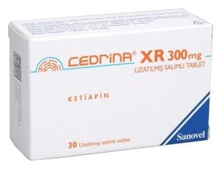

Cedrina XR 300 mg Uzatılmış Salımlı Tablet, Tablet, 60 Adet

Ne için kullanılır
KT · Bölüm 1CEDRİNA XR, beyaz renkli, oblong, bikonveks film kaplı tablettir. CEDRİNA XR, 30 ve 60 tabletlik blister ambalajlarda sunulmaktadır. CEDRİNA XR etkin maddesi ketiapin olan, antipsikotikler (psikiyatrik hastalıkların tedavisinde kullanılan ilaçlar) olarak adlandırılan ilaç grubuna ait bir ilaçtır. CEDRİNA XR aşağıdaki hastalıkların tedavisinde etkilidir:
e Bipolar bozukluğa eşlik eden majör depresif ataklar: Bu durumda kendinizi üzgün hissedersiniz. Karamsarlık, suçluluk, enerji kaybı, iştah azalması ve uykusuzluk hissedebilirsiniz.
e Bipolar bozuklukta orta-ileri derece mani atakları: aşırı coşkulu, heyecanlı, mutlu, meraklı veya hiperaktif olursunuz (uykuya her zamankinden daha az ihtiyaç duyar, daha konuşkan olur, düşüncelerin veya fikirlerin hızla akıp geçtiğini fark edebilirsiniz) ya da saldırgan veya yıkıcı tavırlar dahil karar verme yeteneğinizde zafiyet oluşur.
e Daha önce ketiapin tedavisine cevap vermiş olan bipolar bozukluğu olan hastalarda mani ve depresif atakların nüks etmesinin önlenmesinde.
e Şizofreni: gerçekte var olmayan şeyleri duyabilir veya hissedebilirsiniz; gerçek olmayan şeylere inanırsınız ya da garip şüphe, endişe, kafa karışıklığı, suçluluk, gerginlik, can sıkıntısı hissedersiniz.
CEDRİNA XR majör depresif bozuklukta, majör depresif atakların tedavisinde kullanıldığında
bu hastalıkların tedavisinde kullanılan başka bir ilaca ilave olarak alınacaktır.
Kendinizi iyi hissetseniz bile doktorunuz CEDRİNA XR reçetenizi yazmaya devam edebilir.